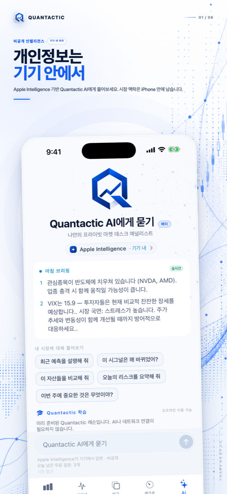
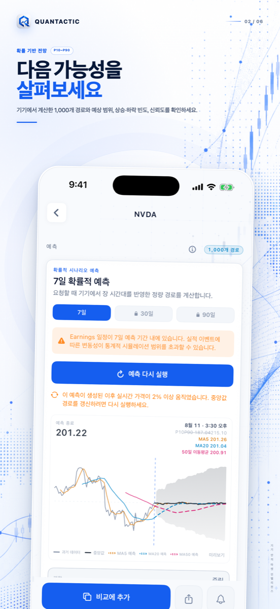
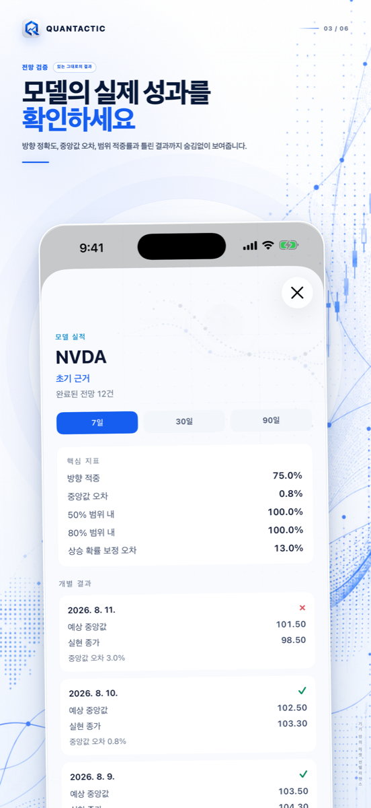
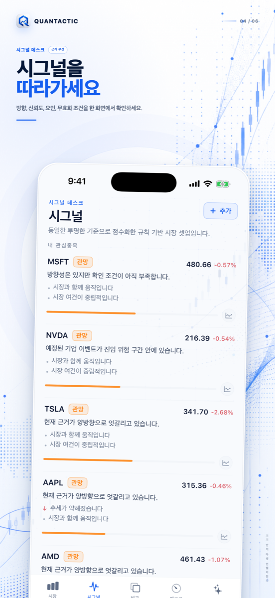
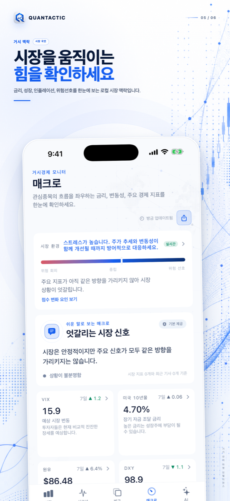
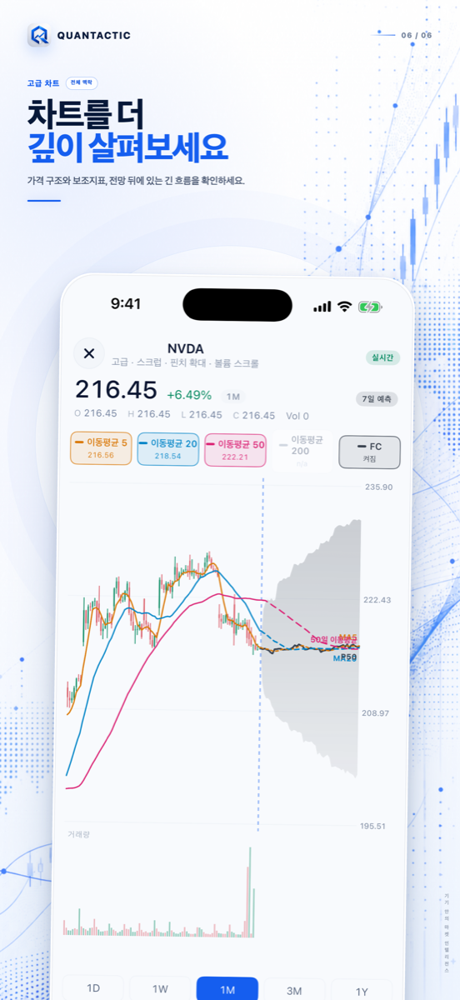

QUANTACTIC 1.3 · 프라이버시 중심
시장을 선명하게.
근거는 가까이.
온디바이스 AI, 설명 가능한 시그널, 확률 기반 전망, 매크로 맥락과 아름다운 공유 카드를 하나의 차분한 흐름에 담은 iPhone용 프라이빗 시장 데스크입니다.
iPhone · iOS 26 이상 · 계정 및 증권 계좌 연결 불필요

예언이 아닌 확률
범위를 살피고 모델을 검증하세요.
7일·30일·90일 시나리오를 확인한 뒤 완료된 전망을 실제 결과와 비교하세요. 방향 정확도, 오차, 범위 포함률과 개별 실패가 남습니다.



근거를 보여주는 시그널
무엇이 셋업을 지지하고 무너뜨리는지 확인하세요.
방향, 신뢰도, 측정된 동인, 리스크와 무효화 조건을 함께 보여줍니다. 블랙박스나 확인되지 않은 촉매는 없습니다.
하나의 리서치 데스크
매크로와 차트 깊이를 노이즈 없이.
금리, 변동성, 유가, 달러, 경제 이벤트, 캔들, 거래량, 이동평균, 지지·저항과 전망 오버레이를 한곳에서 확인하세요.


QUANTACTIC PRO
더 깊게. 보상형 광고 없이.
7일 전망 무제한, 전체 30일·90일 시나리오, 깊은 모델 근거, 확장 AI와 더 높은 리서치 한도를 제공합니다.
전체 전망
7일 무제한과 전체 30일·90일 확률 범위.
모델 책임성
방향, 오차, 범위 포함률과 개별 결과 추적.
깊은 근거
시그널, 리스크와 무효화 조건 상세.
프라이빗 AI
지원 기기에서 더 많은 시장 질문 이용.
무료 사용자는 현지 날짜 기준 하루 한 번 7일 전망을 이용합니다. 추가 실행은 보상형 광고 시청 또는 Pro 업그레이드를 직접 선택할 때만 제공되며 화면 이동 중 광고는 없습니다.
약 33% 절약 · 지속적인 리서치에 최적
다운로드 전에 확인하는 명확한 답변.
거래를 실행하나요?
아니요. 증권 계좌 연결, 거래 실행, 입금 수취 또는 투자 관리를 하지 않습니다.
전망은 보장되나요?
아니요. 확률 기반 시나리오이며 목표가, 거래 지시 또는 보장이 아닙니다.
iPhone에 무엇이 남나요?
관심종목, 설정, 전망 기록과 지원되는 대화는 정책에 따라 로컬 저장됩니다. 시장 데이터, 뉴스, 구매와 광고에는 네트워크가 필요합니다.
광고는 언제 보이나요?
무료 일일 전망을 사용한 뒤 추가 실행을 위해 보상형 광고를 명시적으로 선택한 경우뿐입니다. 화면 이동 광고는 없습니다.